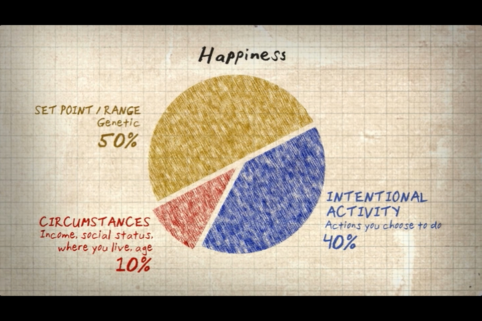

By: Delaney Cummins
From the Documentary "Happy :)"
Inspired by research in the emerging field of the study of happiness.
H = S + C + V
- H: Happiness
- S: Our biological set point
- C: Conditions of living
- V: Voluntary actions or choices we make daily
Based on their research they arrived at the following breakdown:

- S – 50% Our biological set point
- C – 10% Conditions of living
- V – 40% Voluntary actions or choices we make daily
About
Contact